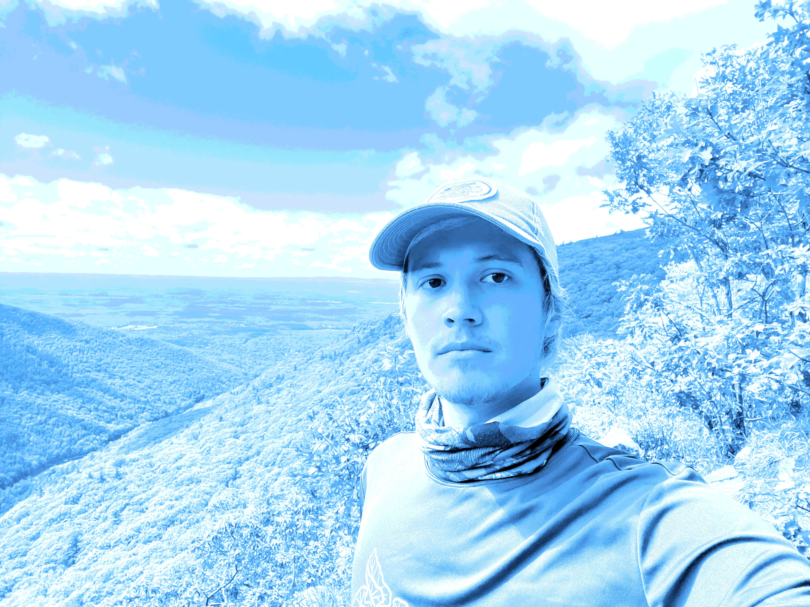

About Me-me

Hi! I'm Adrian and this is my website!
I am a Chicano faggot living it up in the big CITY (Lenapehoking/NYC) I was raised in Idyllwild, a tiny village in the mountains of Southern California. Growing up, everyone was mean af to me because I had long hair and everyone knew that I was gay. They called me "joto" and pinched my little cheeks! I had to become chronically online to cope. Even though, the only way I could be chronically online was through CoolMathGames, YouTube, and XVIDEOS. All my favorite URLs were seared into the muscle-memory of my fingers by the time I was 11. So when I started going art school where I was finally considered normal, I was already all messed up and couldn't get off of the internet!
Don't worry, the damage was not permanent in any kind of obvious way. I still became a high achiever and graduated from a bon-a-fide ivy league university with my bachelor's in environmental engineering. The end of college would've been the perfect time for me to shed my crippling internet habits, however, I graduated in the middle of a pandemic! I couldn't stop being online now! To increase my sociable circumstances, I moved to the middle of nowhere in Upstate NY without a car or any friends. I became terribly depressed and suicidal! And the TikToks were not helping!!! Help!!!
To save myself, I made the decision to go into debt for a car and to move to another village---this time in the Hudson Valley. In Catskill, I regained my sanity, discovered alcohol, and became a tenant organizer. Although, I still couldn't shake my desire to be on the web, but this time in a wholesome, god-honoring way. But I realized that I could not achieve this dream so close to nature, so I moved to concrete-central, AKA New York City.
I made this website for two reasons.
(1) For the last several years, I have not had much physical space to make my preferred method of artistic expression: painting. This webspace, which requires so much time and patience to make from code (because I wrote it all by myself from HTML), is a twilight zone that is a new media for me to explore. There is so much history and ideas from the world of personal websites, and I find so much inspiration from things that people make online. I love being able to have an easily expressed artform that has endless avenues to explore.
(2) This space online exists outside of social media. I think that social media is a blight for critical thinking among people. You cannot post anything for people's eyes without a degree of performativity. Everything you think of and create must ultimately consider hundreds of people seeing it (at least if you're popular like me 😎), regardless of your relationship to them. So you never make anything that is really true for social media, you will always be compromising or performing for a panopticon. I suppose there is no way to prove that: it is a little "if a tree falls in the forest and no one is around does it make a sound" kind of logic. But, at least for me, when I make something to put on my website, I never think of other people. I've found this space, outside of the social sphere, to enable me to be very authentic in what I make. Additionally, this space challenges me to be slow in a way that social media does not. Instagram and Twitter reward you for saying and doing things that immediately come to your mind. Deep thinking is never really rewarded in algorithms, at best, the perception of deep thinking is what people find to be enticing online. Here I must take time to do things because making new webpages is hard. And if I am putting so much work into it, why would I reward my immediate thoughts unless they prove themselves to be worthy of my time and attention?